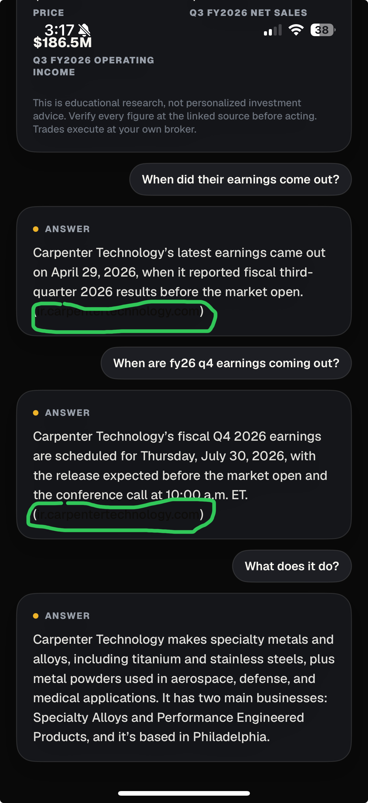

Hi there! Thought I'd help a bit
- Aarish
Hi OpenTrade team, I'm Aarish, a current Data Engineer Intern at Munich Re and a CS & Finance student at Northeastern applying to be an intern. I downloaded the app to see if the product was as interesting as the pitch (it is — I genuinely like it). Along the way I hit two bugs: account sign-in fails on both providers, and the AI's research citations are invisible in dark mode. Details, evidence, and repro steps below.
Nobody can actually create an account
On the You tab, the Sync your deck card offers two sign-in options. Both fail — in two different ways:
Continue with Apple opens the native Sign in with Apple sheet, but after Face ID succeeds it comes back with "Sign Up Not Completed" — every time.
Continue with Google completes the OAuth flow, but instead of handing the session back to the app, it loads app.opentrade.live inside the in-app browser sheet. Dismiss the sheet and the native app is still in Guest mode — nothing syncs.
- Open the You tab as a guest and find Sync your deck.
- Tap Continue with Apple and complete the native sheet with Face ID.
- The sheet returns "Sign Up Not Completed" — reproducible on every attempt.
- Tap Continue with Google and approve the sign-in prompt.
- OAuth completes, but the session opens inside the browser sheet instead of returning to the app — you're left in Guest mode.
- Apple: the sheet completes account creation, dismisses itself, and the deck syncs.
- Google: after OAuth, the session redirects back into the native app (universal link / custom-scheme callback) and lands signed in — not stranded in a webview of the web app.
Why it matters: this card is the entire account-creation funnel. Every new iOS user who tries to sign up right now can't — and a failed sign-up is where most of them would churn. Guest mode is the only reason I could keep testing.
The sources are there. You just can't see them.
In dark mode, when the AI finishes researching a question, its ANSWER card appends an inline source citation — e.g. (ir.carpentertechnology.com) — rendered in a very dark shade on the dark card. The text should flip to white; instead it's effectively invisible.

- Open the app with the appearance set to dark mode.
- Open any story and ask the AI a research question — e.g. "When did their earnings come out?"
- The ANSWER card appends an inline source citation, e.g. (ir.carpentertechnology.com).
- The citation renders in a very dark shade on the dark card — effectively invisible.
Carpenter Technology's fiscal Q4 2026 earnings are scheduled for Thursday, July 30, 2026… (ir.carpentertechnology.com)
Carpenter Technology's fiscal Q4 2026 earnings are scheduled for Thursday, July 30, 2026… (ir.carpentertechnology.com)
Likely a hard-coded text color on the citation span that doesn't respond to the dark-appearance trait, rather than a dynamic/system color.
Why it matters: the card right above the chat tells users "Verify every figure at the linked source before acting." For a product whose pitch is hedge-fund-level research for everyone, those citations are the trust layer — they just happen to be the one thing on screen nobody can read.
I found both of these within my first few sessions of ordinary use — no edge-case hunting. I like the product enough to have kept going after the sign-in wall, and I'd love to help find (and fix) the next ones as an intern.